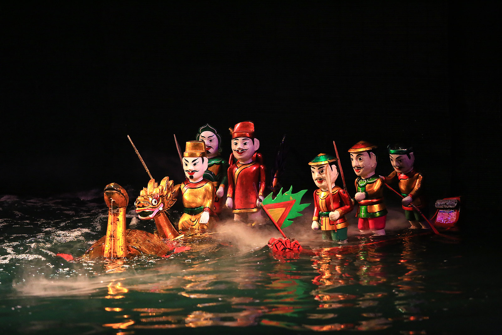

La culture du Vietnam est un mélange riche de traditions ancestrales, d'influences chinoises,
françaises et khmères, ainsi que d'une identité nationale forte.
Voici un aperçu des aspects clés de la culture vietnamienne :
1. Les traditions et les valeurs
-Le confucianisme influence fortement la société vietnamienne, mettant l'accent sur la piété
filiale, le respect des anciens et l'harmonie sociale.
-L'importance de la famille : la famille est au cœur de la société vietnamienne. Les décisions sont souvent
prises collectivement, et plusieurs générations vivent sous le même toit.
-Les ancêtres : le culte des ancêtres est une pratique essentielle. Chaque famille possède un autel où elle rend
hommage aux membres décédés.
2. La cuisine vietnamienne
Équilibre des saveurs :
-la cuisine vietnamienne est connue pour son équilibre entre sucré, salé, acide et épicé.

Plats emblématiques :
-Phở (soupe de nouilles au bœuf ou au poulet)

-Bánh mì (sandwich vietnamien influencé par la baguette française)

-Gỏi cuốn (rouleaux de printemps frais)
-Bún chả (vermicelles de riz avec porc grillé et herbes)
Utilisation des herbes et sauces :
-coriandre, menthe, basilic, et sauces à base de poisson sont omniprésentes.
3. Les fêtes et célébrations
-Tết Nguyên Đán (Nouvel An lunaire) : c'est la fête la plus importante, marquant le début de
l'année lunaire avec des repas en famille, des offrandes aux ancêtres et des enveloppes rouges
(li xi) pour les enfants.

-La fête de la mi-automne : célébrée avec des lanternes et des gâteaux de lune.
-La fête des ancêtres (Vu Lan) : similaire à la Toussaint, elle est dédiée aux défunts.

4. Les arts et la musique
-Musique traditionnelle : instruments comme le đàn bầu (monocorde) et le đàn tranh (cithare).
-Théâtre et marionnettes sur l'eau : un art typiquement vietnamien, souvent inspiré des
légendes locales.

-Littérature et poésie : Truyện Kiều de Nguyễn Du est une œuvre majeure.
5. Les croyances et religions
-Bouddhisme : la religion dominante, souvent mélangée au taoïsme et aux croyances animistes.
-Christianisme : introduit par les missionnaires européens, notamment au XVIIe siècle.

-Cao Đài et Hòa Hảo : religions syncrétiques propres au Vietnam.
6. L'habillement traditionnel
-Áo dài : une tunique longue et élégante portée par les femmes et parfois les hommes, surtout
lors des grandes occasions.
-Nón lá : le célèbre chapeau conique en feuilles de palmier.
7. Les arts martiaux vietnamiens
-Vovinam : un art martial vietnamien combinant souplesse, rapidité et techniques
d'auto-défense.